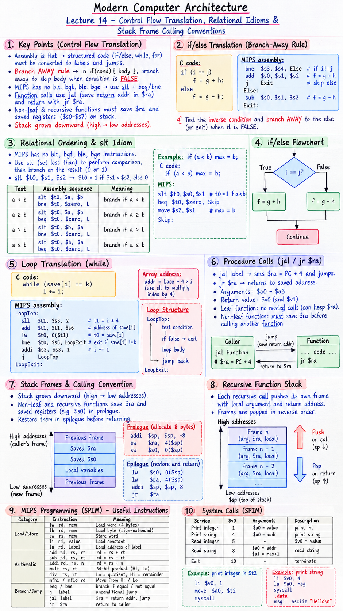

Short Notes & Visual Summary
Core translation rules and assembly calling patterns for Lecture 14:
- Branch AWAY Rule: In
if (cond) { body }, assembly branches AWAY to skip the body when the condition isFALSE(e.g., testa == b→ usebne a, b, ELSE_LABEL). - Relational Ordering (
sltIdiom): MIPS lacksblt/bgtinstructions. To testa < b, executeslt $t0, $a, $b(sets$t0=1if true, 0 if false), then branch on$t0usingbne $t0, $zero, LABEL. - Function Calls (
jal/jr $ra):jal FUNCTIONsavesPC+4into$raand jumps. Function returns viajr $ra. - Stack Frame Management: The stack grows downward (subtracting from
$sp). Non-leaf and recursive functions MUST save$raand saved registers onto the stack in prologue and restore them before returning.
Stack Memory Growth & Frame Layout
|-- Pushed $ra (return addr)
|-- Pushed $s0 (saved reg)
Low Addr ↓ [ $sp → Top of Stack ]
addi $sp, $sp, -8 (allocate 8 bytes)sw $ra, 4($sp) (save return addr)sw $s0, 0($sp) (save $s0 reg)Epilogue Code:
lw $s0, 0($sp)lw $ra, 4($sp)addi $sp, $sp, 8jr $ra

Click image to open high-resolution version in new tab
Conditionals & Branch-Away Logic
1.1 High-Level Structure Reversal
High-level code is structured with nested control blocks (if/else, while). Assembly is flat. Translating control flow requires flattening blocks into labeled jump targets using conditional branches.
1.2 Branch-if-Equal (beq) & Not-Equal (bne)
MIPS provides two core conditional branch instructions:
beq $t0, $t1, TargetLabel→ Jump to TargetLabel ifReg[$t0] == Reg[$t1]bne $t0, $t1, TargetLabel→ Jump to TargetLabel ifReg[$t0] != Reg[$t1]
1.3 Reversing Test Conditions
To implement high-level if (x == y) { body }, assembly evaluates the inverse condition to branch away over the body when false:
# C code: if (i == j) f = g + h; else f = g - h;
bne $s3, $s4, ElseBlock # Branch away to Else if i != j
add $s0, $s1, $s2 # f = g + h
j ExitIf # Skip Else block
ElseBlock:
sub $s0, $s1, $s2 # f = g - h
ExitIf:1.4 if/else Flowchart Translation
The conditional test splits execution into two divergent paths that rejoin at a common exit label.
Relational Ordering & The slt Idiom
2.1 Hardware Relational Limitations
Including hardware comparison logic for <, >, <=, >= directly inside conditional branch hardware makes the branch decoder slow. MIPS separates comparison from branching.
2.2 Set-Less-Than (slt & slti) Instructions
MIPS uses the slt (Set Less Than) instruction:
For constants: slti $t0, $s1, 100.
2.3 Building <, >, <=, >= with $zero
Combining slt with bne / beq and $zero synthesizes all 4 relational tests:
- \(a < b\):
slt $t0, $a, $b→bne $t0, $zero, Target - \(a \ge b\):
slt $t0, $a, $b→beq $t0, $zero, Target - \(a > b\): Swap operands!
slt $t0, $b, $a→bne $t0, $zero, Target - \(a \le b\): Swap operands!
slt $t0, $b, $a→beq $t0, $zero, Target
2.4 Assembly Comparison Code Examples
# C code: if (a < b) max = b;
slt $t0, $s0, $s1 # $t0 = 1 if a < b
beq $t0, $zero, Skip # If false ($t0 == 0), skip
move $s2, $s1 # max = b
Skip:Loop Translation Patterns (while & for)
3.1 Flattening Structured Loops
Loops consist of a top condition test, a loop body, and an unconditional jump back to the top test.
3.2 Top Test & Jump-Back Architecture
# C code: while (save[i] == k) i += 1;
LoopTop:
sll $t1, $s3, 2 # $t1 = i * 4 (byte offset)
add $t1, $t1, $s6 # $t1 = address of save[i]
lw $t0, 0($t1) # $t0 = save[i]
bne $t0, $s5, LoopExit # Exit loop if save[i] != k
addi $s3, $s3, 1 # i += 1
j LoopTop # Jump back to test
LoopExit:3.3 Pointer Arithmetic & Array Traversal
Because integer elements occupy 4 bytes in 32-bit systems, array index i must be multiplied by 4 (sll $t1, $s3, 2) to compute byte offsets relative to base array address $s6.
3.4 Loop Optimization Basics
Compilers optimize loop overhead by moving the test condition to the bottom of the loop, executing 1 branch per iteration instead of 2 (branch + jump).
Procedure Call Mechanics
4.1 Jump-and-Link (jal) & Return (jr $ra)
Procedure execution requires saving the return instruction address before jumping:
jal FunctionLabel→ Sets$ra = PC + 4and jumps toFunctionLabel.jr $ra→ Jumps back to the saved address in$ra.
4.2 Parameter ($a0-$a3) & Return ($v0-$v1) Flow
Subroutine call steps:
- Caller places arguments in
$a0–$a3. - Caller executes
jal Function. - Function computes result, placing it in
$v0. - Function executes
jr $rato return.
4.3 Leaf vs Non-Leaf Subroutines
A Leaf function makes no nested subroutine calls. It can execute without modifying $ra. A Non-Leaf function calls other subroutines; executing jal inside a non-leaf function overwrites $ra, so $ra MUST be saved onto the stack beforehand!
4.4 Procedure Execution Flow
Visual breakdown of jal and jr $ra register flow.
Stack Frames & Recursive Functions
5.1 The Stack Architecture
The stack is a Last-In-First-Out (LIFO) structure located in high memory. As values are pushed, the stack pointer $sp decrements towards lower memory addresses.
5.2 Pushing & Popping Frame Registers
Allocating 8 bytes for 2 words on the stack:
# Push prologue:
addi $sp, $sp, -8 # Allocate 8 bytes
sw $ra, 4($sp) # Save return address
sw $s0, 0($sp) # Save register $s0
# Pop epilogue:
lw $s0, 0($sp) # Restore register $s0
lw $ra, 4($sp) # Restore return address
addi $sp, $sp, 8 # Deallocate stack frame
jr $ra # Return to caller5.3 Preserving $ra in Recursive Functions
Recursive functions (e.g. Factorial) call themselves repeatedly. Each invocation pushes its own stack frame containing its local argument $a0 and return address $ra. Unwinding the recursion pops frames in exact reverse order.
5.4 Summary Comparison & Rapid Check
Self-Assessment Check
- Q1: Why does assembly code branch AWAY when translating an
ifstatement?
Answer: Because if the condition is false, assembly must skip over theifbody to theelseor exit block. - Q2: How does MIPS implement
if (a < b)without abltinstruction?
Answer: By executingslt $t0, $a, $bfollowed bybne $t0, $zero, Label. - Q3: What happens to register
$raif a non-leaf function callsjalwithout saving$raon the stack?
Answer: The secondjaloverwrites$ra, causing an infinite return loop when returning from the nested function.
MIPS Programming Guide (SPIM)
A step-by-step guide for writing real MIPS programs: storing data, doing arithmetic, making decisions, looping, calling subroutines and printing results in the SPIM simulator. Adapted and expanded from the MIPS Quick Reference (Johns Hopkins CS333).
6.1 What MIPS Is & the Load/Store Model
MIPS is a RISC (Reduced Instruction Set Computer) design — few instructions, all the same size, very regular rules. Programs run on SPIM, a simulator that emulates a MIPS processor.
The CPU cycle: fetch → decode → execute → advance PC. Each instruction is tiny: add $t0, $t1, $t2 maps to exactly one machine instruction.
RAM (large, slow) ↔ Registers (32 fast boxes inside CPU) ↔ ALU (calculator)
- RAM talks to registers only through
lw/lb(load) andsw/sb(store). - The ALU only ever sees registers — never RAM directly.
6.2 Data Types, Literals & Registers
MIPS works with three sizes: byte (1 byte, 8 bits), halfword (2 bytes, 16 bits), word (4 bytes, 32 bits). Every register and every instruction is exactly one word wide.
| Name | Size | Bits | Signed Range |
|---|---|---|---|
| byte | 1 byte | 8 | −128 to 127 |
| halfword | 2 bytes | 16 | −32,768 to 32,767 |
| word | 4 bytes | 32 | ≈ −2.1 billion to 2.1 billion |
- Number:
4→ the integer 4 - Character:
'b'→ ASCII 98 (1 byte) - String:
"A string"→ one byte per character
Common bug: '4' (ASCII 52) ≠ 4 (integer four).
Registers: MIPS has 32 general-purpose 32-bit registers. Every register starts with $. You can name by number ($8) or by alias ($t0) — they refer to the same box.
| Name | Number | Job | Preserved across call? |
|---|---|---|---|
$zero | 0 | Always 0 — writes discarded | constant |
$v0–$v1 | 2–3 | Return values; $v0 also picks syscall | No |
$a0–$a3 | 4–7 | Arguments to a subroutine | No |
$t0–$t9 | 8–15, 24–25 | Temporaries — caller must save if needed | No |
$s0–$s7 | 16–23 | Saved values — callee must restore | Yes |
$sp | 29 | Stack pointer (top of stack) | Yes |
$fp | 30 | Frame pointer | Yes |
$ra | 31 | Return address (written by jal) | Save if calling again |
Special registers Hi & Lo: Multiply/divide results don't fit in one register. mult puts the upper 32 bits in Hi and lower 32 bits in Lo. Copy with mfhi / mflo.
Stack: Grows from high to low memory. Pushing means subtracting from $sp.
6.3 Program Structure & Data Declarations
A MIPS program is a plain text file ending in .s. Two sections:
| Part | Marked by | Contents |
|---|---|---|
| Data declarations | .data | Variable names; storage allocated in RAM |
| Code | .text | The program instructions |
| Starting point | main: | First instruction to execute |
| Ending point | exit syscall | li $v0, 10 + syscall |
# Template.s
.data
var1: .word 3 # integer, initial value 3
array1: .byte 'a','b' # 2-byte character array
array2: .space 40 # 40 uninitialised bytes
msg: .asciiz "Hi\n" # null-terminated string
.text
main:
# ... instructions ...
li $v0, 10
syscall # exitStorage types: .word (4 bytes), .byte (1 byte), .space N (N uninitialised bytes), .asciiz (null-terminated string). Anything after # is a comment.
6.4 Load & Store Instructions
RAM access is only allowed with load and store instructions. All other instructions use register operands exclusively.
| Instruction | Form | What it does |
|---|---|---|
lw | lw rd, mem | Load word (4 bytes) from RAM into register |
lb | lb rd, mem | Load byte, sign-extended into 32-bit register |
sw | sw rs, mem | Store register word into RAM |
sb | sb rs, mem | Store low byte of register into RAM |
li | li rd, value | Load immediate constant into register (no RAM) |
la | la rd, label | Load address of label into register |
Memory trick: The register always comes first. For lw, data flows RAM → register. For sw, register → RAM.
la vs lw: lw $t0, var1 copies the value stored at var1. la $t0, var1 copies the address of var1 (like a C pointer).
.data
var1: .word 23
.text
main:
lw $t0, var1 # $t0 = 23
li $t1, 5 # $t1 = 5
sw $t1, var1 # var1 = 5
li $v0, 10
syscall6.5 Indirect & Based Addressing
Put an address in a register and reach memory through it, optionally adding an offset. Only used with load and store.
| Style | Syntax | Address used |
|---|---|---|
| Indirect | ($t0) | Whatever address is in $t0 |
| Based / indexed | 4($t0) | $t0 + 4 |
| Negative offset | -12($t0) | $t0 − 12 |
Arrays: Keep base address in a register; element i is at offset 4 × i (integers are 4 bytes each).
Stack: Access saved values as 0($sp), 4($sp), etc.
.data
array1: .space 12 # 3 integers
.text
main:
la $t0, array1
li $t1, 5
sw $t1, ($t0) # array1[0] = 5
li $t1, 13
sw $t1, 4($t0) # array1[1] = 13
li $t1, -7
sw $t1, 8($t0) # array1[2] = -7
li $v0, 10
syscall6.6 Arithmetic (add, mult, div, Hi/Lo)
Arithmetic works only on registers. Most instructions take 3 operands — destination first.
| Instruction | Meaning | Notes |
|---|---|---|
add rd, rs, rt | rd = rs + rt | Signed; traps on overflow |
sub rd, rs, rt | rd = rs − rt | Signed |
addi rd, rs, n | rd = rs + n | No subi; use negative n |
addu / subu | unsigned add/sub | Wraps silently on overflow |
move rd, rs | rd = rs | Copy register |
mult rs, rt | (Hi, Lo) = rs × rt | 64-bit result split across Hi & Lo |
div rs, rt | Lo = rs ÷ rt, Hi = rs mod rt | Quotient in Lo, remainder in Hi |
mfhi rd | rd = Hi | Move from Hi (remainder / upper bits) |
mflo rd | rd = Lo | Move from Lo (quotient / lower bits) |
# (a + b) * c, then a mod 4
# $t1=6, $t2=4, $t3=3
add $t4, $t1, $t2 # $t4 = 10
mult $t4, $t3 # Lo = 30
mflo $t5 # $t5 = 30
li $t6, 4
div $t1, $t6 # Lo = 1 (6÷4), Hi = 2 (6 mod 4)
mfhi $t7 # $t7 = 26.7 Control Flow: Branches & Jumps
Branches jump to a label only if a comparison is true. The program counter (PC) normally increments by 4 each instruction; branches change it.
| Instruction | Branch if | C equivalent |
|---|---|---|
b target | always | goto target; |
beq rs, rt, target | equal | if (rs == rt) |
bne rs, rt, target | not equal | if (rs != rt) |
blt rs, rt, target | less than | if (rs < rt) |
ble rs, rt, target | ≤ | if (rs <= rt) |
bgt rs, rt, target | greater than | if (rs > rt) |
bge rs, rt, target | ≥ | if (rs >= rt) |
b, blt, ble, bgt, bge are pseudo-instructions the assembler rewrites automatically.
Subroutine calls — jal & jr:
jal label— saves return address in$ra, then jumps to label.jr $ra— jumps back to the saved return address.- Warning: If a subroutine calls another, the second
jaloverwrites$ra. Save$raon the stack first.
# if (a > b) max = a; else max = b;
# a=$t0, b=$t1, max=$t2
bgt $t0, $t1, a_bigger
move $t2, $t1 # else: max = b
b done_if
a_bigger:
move $t2, $t0 # then: max = a
done_if:
# Subroutine that squares a number (argument in $a0, result in $v0)
main:
li $a0, 7
jal square
move $t0, $v0 # $t0 = 49
li $v0, 10 ; syscall
square:
mult $a0, $a0
mflo $v0
jr $ra
# Saving $ra for nested calls
outer:
addi $sp, $sp, -4 # make room
sw $ra, 0($sp) # save return address
jal square # $ra overwritten here
lw $ra, 0($sp) # restore
addi $sp, $sp, 4 # free stack space
jr $ra6.8 System Calls & I/O (SPIM)
To print, read input or exit: put service code in $v0, arguments in $a0–$a1, then syscall.
| Service | $v0 code | Arguments | Result |
|---|---|---|---|
| Print integer | 1 | $a0 = value | — |
| Print string | 4 | $a0 = address of string | — |
| Read integer | 5 | — | $v0 = value read |
| Read string | 8 | $a0 = buffer addr, $a1 = max chars+1 | — |
| Exit | 10 | — | — |
# Print integer in $t2
li $v0, 1
move $a0, $t2
syscall
# Print a string
.data
string1: .asciiz "Print this.\n"
.text
li $v0, 4
la $a0, string1 # NOTE: la not lw
syscall
# Read integer and store in RAM
li $v0, 5
syscall
sw $v0, int_value
# Exit (always end your program with this)
li $v0, 10
syscallString storage: .asciiz null-terminates automatically. "Hi\n" = bytes 72, 105, 10, 0.
6.9 Complete Example: Sum 1×2 + 2×3 + … + 10×11
Computes 440 and prints it. Uses: data section, li, loop via bgt, addi, mult, mflo, add, and two syscalls.
| Register | Role | Starts at |
|---|---|---|
$t0 | loop counter | 1 |
$t1 | running sum | 0 |
$t2 | loop limit | 10 |
$t3 | scratch (count+1, then product) | — |
.data
out_string: .asciiz "The result is:\n"
.text
main:
li $t0, 1 # counter = 1
li $t1, 0 # sum = 0
li $t2, 10 # limit = 10
loop_top:
bgt $t0, $t2, loop_end # exit if counter > 10
addi $t3, $t0, 1 # $t3 = counter + 1
mult $t0, $t3 # Lo = counter * (counter+1)
mflo $t3 # $t3 = product
add $t1, $t1, $t3 # sum += product
addi $t0, $t0, 1 # counter++
b loop_top
loop_end:
li $v0, 4
la $a0, out_string
syscall # print label
li $v0, 1
move $a0, $t1
syscall # print 440
li $v0, 10
syscall # exitVerify: Σ k(k+1) for k=1..10 = (1²+…+10²) + (1+…+10) = 385 + 55 = 440.
6.10 Instruction Cheat Sheet
| Group | Instruction | Meaning |
|---|---|---|
| Load/Store | lw rd, mem | rd = word at mem |
| Load/Store | lb rd, mem | rd = byte at mem, sign-extended |
| Load/Store | sw rs, mem | word at mem = rs |
| Load/Store | li rd, value | rd = constant (no RAM) |
| Addressing | la rd, label | rd = address of label |
| Addressing | lw rd, 4(rs) | rd = word at rs+4 |
| Arithmetic | add / sub / addi | signed add/sub/add-immediate |
| Arithmetic | mult rs, rt | (Hi,Lo) = rs × rt |
| Arithmetic | div rs, rt | Lo = quotient, Hi = remainder |
| Arithmetic | mfhi / mflo rd | rd = Hi / rd = Lo |
| Arithmetic | move rd, rs | rd = rs |
| Branch | b / beq / bne / blt / ble / bgt / bge | conditional/unconditional jump to label |
| Jump | j label | unconditional jump |
| Jump | jr rs | jump to address in rs |
| Subroutine | jal label | $ra = return addr, then jump |
| Subroutine | jr $ra | return to caller |
| System | syscall | service via $v0: 1=print int, 4=print str, 5=read int, 10=exit |
6.11 Practice Questions & Answers
Common Mistakes to Avoid
- Using
lwwhen you meantla(value vs address), especially before printing a string. - Forgetting array offsets jump by 4 for integers, not by 1.
- Doing arithmetic directly on a RAM variable — load it into a register first.
- Forgetting the exit syscall (
li $v0, 10 / syscall). - Calling a subroutine from inside another without saving
$raon the stack.
Practice Q & A
- What is the difference between
$t0and$8?
Nothing — they name the same register. - How many integers can
nums: .space 20hold?
20 ÷ 4 = 5 integers. - After
li $t0,9 / li $t1,2 / div $t0,$t1 / mfhi $t2 / mflo $t3?
$t2 = 1 (remainder), $t3 = 4 (quotient). - Load element 3 of an integer array whose base is in
$s0:lw $t1, 12($s0)— offset = 3 × 4 = 12. - Print the integer in
$s2:li $v0,1 / move $a0,$s2 / syscall. - Why must a recursive subroutine save
$ra?
Everyjaloverwrites$ra, so the inner call destroys the outer return address. - Change Section 10 to sum 1×2 + … + 20×21:
Changeli $t2, 10toli $t2, 20. Answer becomes 3080.
Original PDF Notes
Below is the original PDF document for your reference: